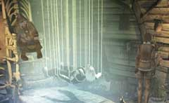

| 概要 | 地図 |
| 淡いヒント集 | ヒント集 | 的確なヒント集 |
| 攻略最短ルート |
| 場所選択に戻る |
ユコール族の村(前半)
|

祈祷師の家に入ってすぐに、あなたは驚くべき光景を目にするだろう。 ハンスの病は悪化し、彼の命はもう長くは保たないのだ! 幸い、祈祷師はあなたのことを知っているし、あなたに対して友好的である。 祈祷師は無駄だと知っているようだが、ハンスの意識を夢の世界から引っ張り出す方法を探らなければならない。知っているのは、祈祷師のみ。会話で、必要な選択肢を選べば、すぐに分かるだろう。 祈祷師から「幸福の木の実」が必要だということ教えてもらったとしても、焦ってはいけない。この木の実を手に入れるには、祈祷師の家にある「祈りの車輪」というアイテムが必要なのだ。 そのアイテムは、祈祷師のいる部屋の画面左側へ行くと置いてある。 
祈祷師の家から出たら、水くみ器を探して欲しい。水くみ器のそばには「空の水筒」と「コルク栓」が置いてある。この二つを入手したら、水くみ器を実際に使ってみて欲しい。 水くみ器の糸の先端に、「空の水筒」を引っかけ、ハンドルを回し水をくみ「水の入った水筒」を入手するのだ。これは、”木の実”を入手するために絶対必要である。 
次に、ユーキーがいるオリの入り口を調べて欲しい。そこには、彼らが食べ（ちらかした）骨が転がっている。その中にある骨の一つ「魚の骨」を拾っておこう。 これだけそろえば、準備は終わった。 後は、洞窟へ行き、左側の穴の奥へ移動してもらいたい。 |
| 場所選択に戻る |
| 概要 | 地図 |
| 淡いヒント集 | ヒント集 | 的確なヒント集 |
| 攻略最短ルート |
Syberia II
| 目次へ戻る | ページの上部へ |